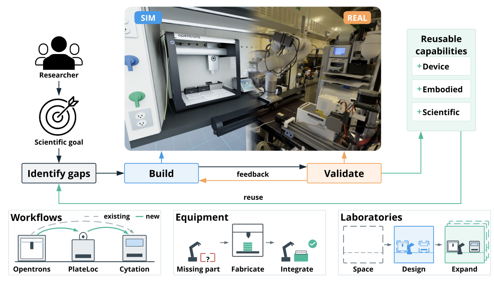
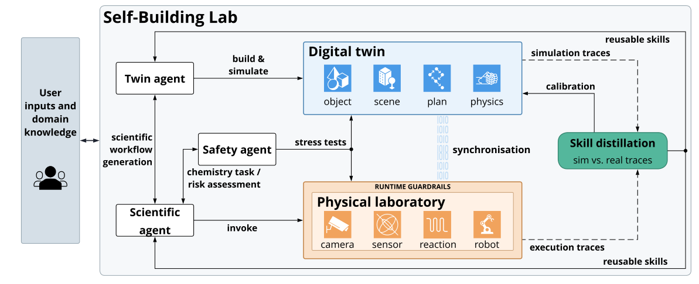
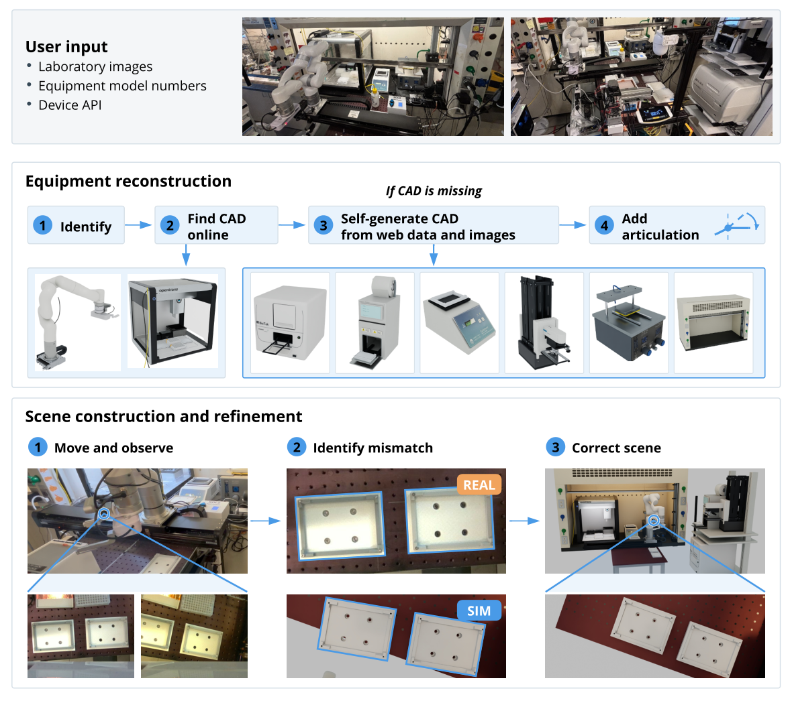
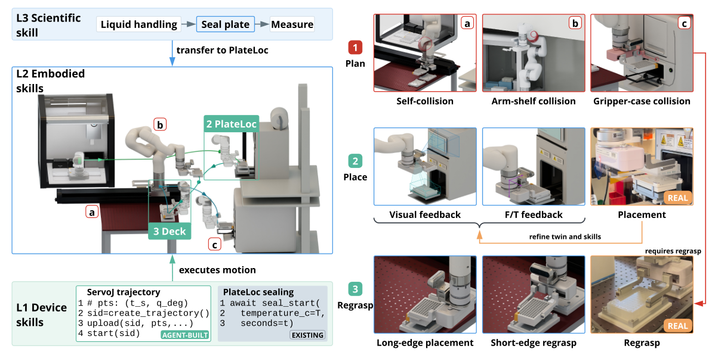
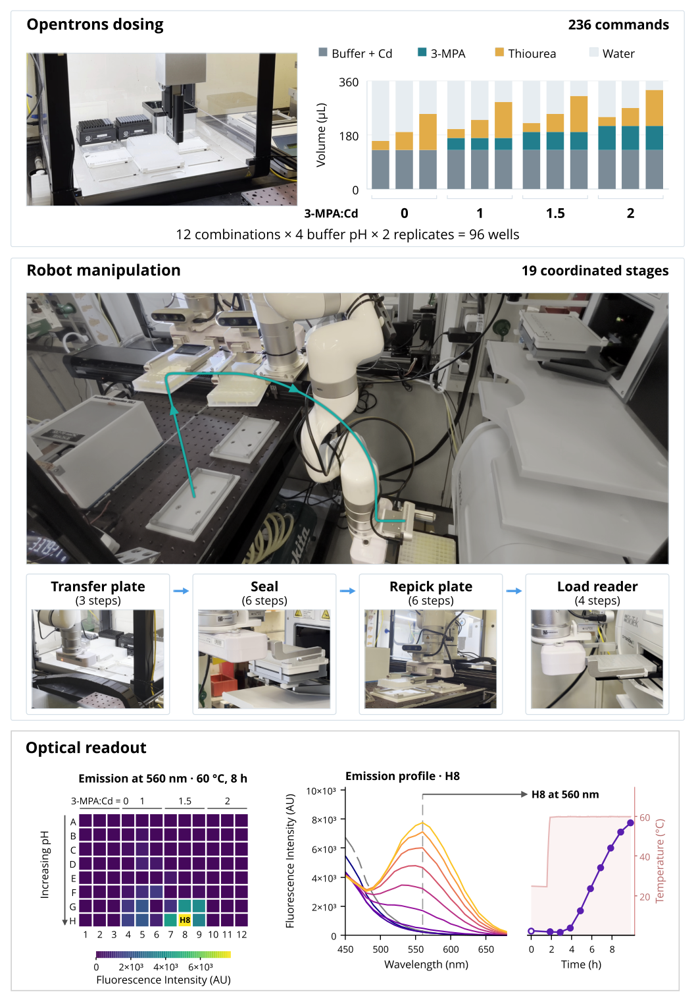
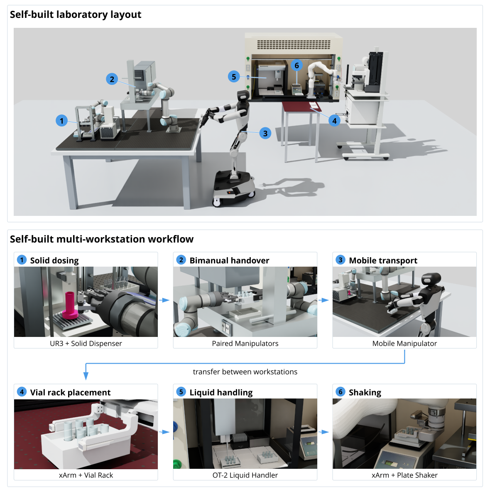

Self-Building Labs：给出科学目标之后，让智能体补齐实验室缺少的能力
论文原文 ↗原文：Jiaru Bai、Yuchi Zhao、Han Hao、Miroslav Bogdanovic、Yang Cao、Varinia Bernales、Alán Aspuru-Guzik，Self-Building Labs，arXiv，2026年10月。官方页面｜原始 PDF
自主实验室通常把“设计—制备—测试—分析”连成循环：算法提出配方，仪器执行实验，测量结果返回给算法。但是，循环能做什么，往往在建设实验室时就已经确定。换一个实验问题，可能需要另一种抓取方式、一个新增的机器人控制接口，或重新组织几台仪器之间的样品转移；这些工作仍然依靠自动化工程人员。
这篇工作的切入点是：把“发展实验能力”也纳入智能体的任务，让研究人员提供科学目标和现有实验室信息，再由系统找出缺口、建立数字模型、开发操作技能，最后组织成可执行的实验流程。 作者将其称为 self-building laboratory，简称 SBL，即能够构建自身所需操作能力的实验室。
例如，要在现有设备上研究 CdS 量子点的形成，问题不只是把配方发给移液机器人。系统还要知道板放在哪里、机械臂从哪边抓、封膜之后怎样换握姿、怎样把板送进读板机，以及读板机能怎样加热和测量。论文用这条真实实验链条展示 SBL 的做法。

图1｜研究目标驱动能力缺口识别，在数字孪生中开发，再到实体实验室执行；成功的设备、机器人操作和科学流程能力留下来供后续使用。
一、从目标走到可执行的实验，需要补齐哪些东西
先盘点实验室，再决定缺什么
输入包括高层科学目标、实验室照片、设备型号，以及已经提供的自动化接口。接口是程序调用设备功能的入口，例如查询移液器配置、要求封膜机启动、读取机械臂状态。作者的实验平台由安装在线性轨道上的 xArm5 机械臂、Opentrons OT-2 移液机器人、PlateLoc 封膜机和 Cytation 5 多功能读板机组成，配有彩色深度相机及六轴力/力矩传感器。
系统首先利用只读接口了解现状：OT-2 台面上有哪些耗材、安装了哪种移液器、还有多少吸头，封膜机和读板机支持什么操作。科学智能体把目标转成实验计划；数字孪生智能体负责设备与场景模型、机器人操作和仿真；安全智能体利用模型分析操作情形，并把速度限制、接触停机等规则接到实体执行层。三者通过共同的实验室状态和执行反馈协作。

图2｜科学智能体提出流程，孪生智能体建立场景并发展技能，实体执行反馈用于校准和技能提炼；运行约束位于仪器与机械臂命令的执行通道中。
不同起点对应不同缺口：已有手动实验室需要建立数字模型与操作技能；换了设备位置，需要更新布局和动作；已经能运行的自主实验室遇到新协议，则重点补充工作流及新增技能。作者也把空房间到实验室布局规划纳入这一框架。
数字孪生怎样从照片变成可规划的场景
数字孪生在这里是一个与实体对应、能追踪状态和模拟运动的三维实验室。它需要表示的不只是仪器外观，还包括门怎样打开、托盘怎样移动、机器人能到哪里、微孔板占据什么空间。
智能体从照片和型号识别设备，先寻找已有 CAD 几何模型或机器人描述文件。找不到时，它查厂家文档、规格与参考图，用已知尺寸和参照物估计大小，把设备拆成外壳、框架、门等部件，再通过 Python 组合基本几何体和网格。对可动部件补上关节、运动轴和行程范围，得到能用于模拟的设备模型。
接着按照片安排初始布局。装在机器人上的相机从不同姿态采集彩色和深度图，智能体比较真实画面与模拟渲染，逐步修正仪器的位置、朝向以及机器人到设备之间的相对位置。这样，照片中的“读板机在右边”才转化成运动规划需要的空间关系。

图3｜先检索或生成设备模型，再补充运动关节；随后让机器人移动观察，比较真实与模拟画面，修正设备的位置与方向。
模拟设备采用与实体相同形式的接口，通过不同端点选择模拟执行或真实执行。设备状态持续同步到模型中。作者用 Isaac Sim 建立场景，用 cuRobo 生成避开机器人自身和周围仪器的运动轨迹，再把轨迹交给实体机械臂。
新技能不是一段指令，而是动作、感知条件和恢复分支
封膜任务很好地展示了“缺少能力”具体是什么意思。科学层要求微孔板从 OT-2 进入封膜机，再到读板机；机器人层必须完成抓取、运输、放入夹具和重新抓握；设备层则需要封膜功能接口及机械臂关节轨迹执行接口。封膜机已有的功能可以直接使用，机械臂缺少的关节伺服接口由智能体补充。
先在数字孪生里根据物体状态选择抓取、放置姿态，再规划轨迹。来到实体实验室后，毫米尺度的放入动作继续利用相机和力/力矩反馈调整：视觉对准后缓慢下降，检测到接触就修正横向位置，载荷降低后继续插入。
这里还有一个容易忽略的动作衔接：适合从 OT-2 取板的长边抓握，不一定能把板放进读板机。系统因此使用中间板架，先放下微孔板，再改从短边重新抓起，形成下一步能够执行的握姿。

图4｜左侧连接科学任务、具身操作和设备接口；右侧展示避碰规划、视觉与力反馈放置，以及由长边抓握改为短边抓握。
最初的开发采用“推理—生成程序—执行动作—观察反馈”的反复探索。化学流程需要稳定而及时的动作，因此，成功操作随后被写成 Python 技能：正常动作按确定步骤运行，传感器条件决定何时继续、修正或恢复。正常执行时可以直接运行技能，遇到超出已编码条件的情形，再交回智能体处理。这使一次探索得到的操作经验能够成为后续实验的积累。
二、完整走一遍：从 CdS 配方到量子点发光
96孔实验怎样被安排和执行
量子点是尺寸很小的半导体晶体，尺寸和表面状态会影响吸收与发光。作者研究的是水溶性、配体封端的 CdS 量子点：硝酸镉提供镉，硫脲提供硫源，3-巯基丙酸（MPA）通过巯基与纳米晶表面配位，抑制过度生长和聚集。碱性条件影响 MPA 的去质子化及其与镉的配位，也影响硫脲释放硫源。
人工准备并放好原液源板后，SBL 根据设备配置生成 OT-2 的独立 Python 协议，先在对应版本的 Opentrons 模拟器中运行，再交给仪器执行。实验同时改变初始 pH、MPA 与镉的摩尔比、硫脲与镉的摩尔比；12种配方组合、4个缓冲液 pH、每种2个重复，正好组成96孔板。pH 覆盖8.5—10.0，镉浓度保持固定。
完成加液需要 236条 OT-2 命令。随后轨道机械臂执行 19个协调阶段：将板从 OT-2 搬到封膜机，封膜，经过中间板架重新抓握，最后装入 Cytation 5。读板机既提供60 °C孵育条件，又记录吸收和发光，化学过程因此与物理操作完整接上。

图5｜上方为96孔配方准备，中间为转板、封膜、重新抓握与装载，下方为8小时后的560 nm发光分布及 H8 孔的光谱和时间轨迹。
实验结果回答了什么化学问题
所有试剂混合后，室温下溶液仍清澈无色，在450—680 nm范围几乎没有发光。随60 °C孵育推进，部分孔的发光逐渐增强；8小时后，较强信号集中在 G7—H9 区域。以 H8 为例，500 nm以上发光增强，峰位从约520 nm移到560 nm，与 MPA 封端 CdS 量子点逐步生长相符。
作者据此得到有利的配体用量区间约为0.75—1.5当量，并发现较高 pH 更有利于量子点形成。这个结果对应两项相互牵制的化学作用：配体帮助成核后的量子点保持分散，过量则会抑制生长；较高 pH 有利于硫脲水解释放硫源。由配方变化、连续孵育到光谱变化，实验室最终给出了可解释的材料形成趋势。
这项端到端展示的重点，是把此前分散在人工编程、机器人调试和化学测量中的工作接成同一条流程。系统不只调用现成仪器，还为实际转板需要补充控制接口、调整接触操作，并把成功动作保留成技能。
三、从一条实验链条扩展到多机器人实验室
作者进一步在仿真中把同样的能力发展过程用于固体处理和多工作站协作。第一个任务是给6个小瓶加固体，再把瓶架送到工作台另一侧。系统根据图像重建场景；用户未指定小瓶与瓶架设计时，生成兼顾固定和抓取的 CAD 模型。较小的 UR3 因中间架子阻挡，无法直接完成全程运输，系统于是规划 UR3 与 UR5 之间的瓶架交接。
接着，固体工作站与 xArm 液体工作站被组合成缓冲液制备流程：固体加料、双臂交接、移动机器人跨站运输、瓶架放入 OT-2、加液、转移至振荡器混合。系统同时建立任务相关的粉体与液体模拟，使布局、运输和仪器操作能够共同规划。

图6｜仿真布局连接 UR3/UR5 固体工作站、移动操作机器人和 xArm 液体工作站，下方展示从固体加料到加液混合的6个环节。
这篇工作最值得关注的新增能力，是让实验室的自动化能力随研究目标发展。数字孪生把物理空间变成可以规划、尝试和校准的环境；感知反馈把规划接到真实接触；可执行技能把慢速探索变成能复用的操作。研究人员由此可以把更多精力放在科学目标及尚需判断的问题上，而系统承担针对现有硬件发展和组合操作能力的工作。
原始摘要完整中文翻译
自主实验室（SDL）通过自动化实验执行和优化，加速科学发现。人工智能智能体越来越能够提出新实验，但现有自主实验室只能执行其最初设计所针对的程序。让它们适应一个新实验，仍然需要大量人工工程工作，因此，实验室的灵活性成为扩大科学发现规模的瓶颈。
我们提出能够自我构建的实验室（SBL）：给定一个高层科学目标，它能够设计、配置并运行自身的实验室设置。SBL 从已有条件出发——从空房间到正在运行的自主实验室——构建缺少的能力，包括实验室布局、数字孪生、机器人技能和实验工作流。我们展示了该系统在不同机器人和设置下工作，并从单个工作站扩展到多个机器人协作的实验室。我们通过一项真实的量子点合成实验，验证了 SBL 的端到端能力。通过将人类研究人员的角色从手工配置和编程设备自动化转向指定科学目标，SBL 让科学自动化更加易用、灵活并能够扩展。